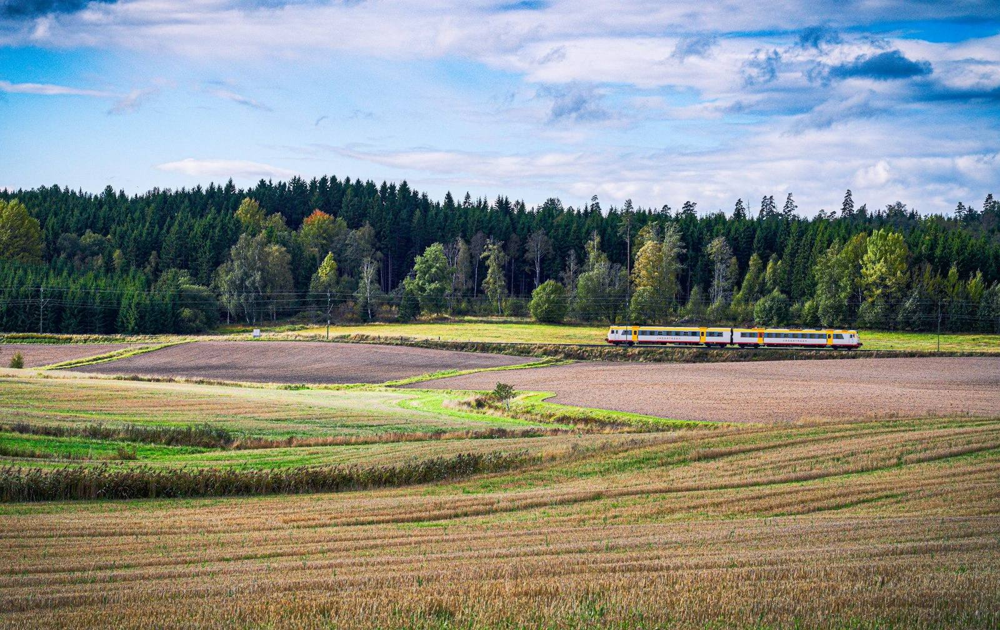
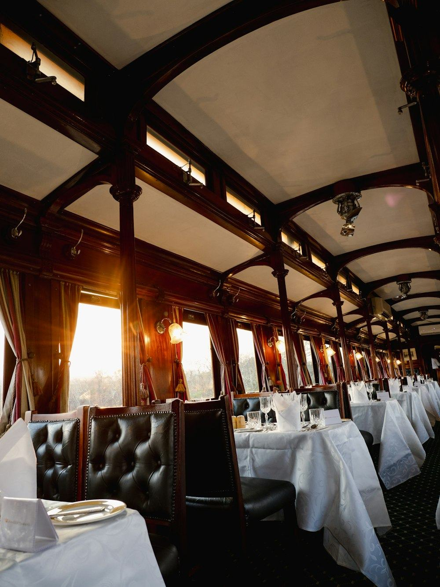

Vita dukar hela vägen.
Klassiska tåg mellan Göteborg och Stockholm.
Sträckan
Fem stationer mellan Göteborg och Stockholm. Välj var du kliver på.
Biljetter släpps cirka två månader före avresa. Tidtabell och priser kommer när bokningen öppnar.
- 1:a och 2:a klassVälj klass när du bokar.
- Internet ombordI de flesta vagnar.
- Biljetten i mobilenSom sms eller e-biljett.
Restaurangvagnen
Alltid med i tåget.
Vita dukar, mat lagad från grunden och 42 platser. Frukost på morgonen, middag senare på dagen.
- Förbetala trerätters i 1:a klass
- Frukost att ta med i 2:a klass

Historien
Ett klassiskt tåg med vagnar från 60-talet.
Tåget började som ett privat initiativ när järnvägen öppnades för fler bolag. Restaurangvagnen är alltid med, och barvagnen med pianobar och skinnfåtöljer finns med på många avgångar.
- Oktober 2010Järnvägen i Sverige öppnas för fler bolag.
- 11 december 2011Tåget invigs mellan Göteborg och Stockholm.


Kundtjänst
Frågor om resan, platser eller gruppbokning. Öppnar strax före trafikstarten.
Blå Tåget Jernbanor AB · Org.nr 556089-9808 · Stationsgatan 7 B, 441 30 Alingsås
Vanliga frågor
När kan jag köpa biljett?
Cirka två månader före avresa.
Kan jag avboka biljetten?
Ja, om du lägger till 100 kr när du bokar. Avboka senast en timme före avgång.
Vad får jag tillbaka om tåget blir sent?
25 % av biljettpriset vid 60 minuter eller mer och 50 % vid 120 minuter eller mer, oavsett orsak. Mejla biljetten med pris och plats till kundtjänst.
Får djur följa med?
Ja, i Djurtillåten klass som du väljer när du bokar. Djuren ligger på golvet, inte i sätena.
Kan jag byta plats efter bokningen?
Ja. Boka och betala först, och kontakta sedan kundtjänst så flyttar de dig till den plats du vill ha.
Går barvagnen med på min avgång?
Barvagnen med pianobar finns med på många avgångar. Vilka meddelas under nyheter samma vecka som du reser. Restaurangvagnen är alltid med.
Kan jag boka bord i restaurangen?
Nej, det går inte att boka bord. Förbetalda måltider serveras direkt efter avgång.
Hur meddelar jag allergier?
Meddela kundtjänst dagen före avresa, gärna via mejl.
Får jag ta med egen alkohol?
Nej, egen medhavd alkohol är inte tillåten ombord.
Reser du med små barn?
Ta med barnvagnen ihopfälld och lägg chassit i bagagehyllan. Skötbord och mikro finns ombord.
Får jag ta med bagage till restaurang- och barvagnen?
Nej. Av säkerhetsskäl får inget bagage följa med in där.
Kan vi boka en konferenskupé?
Ja, en konferenskupé för sex personer i 1:a klass bokas via kundtjänst.
Jag har köpt biljetten på sj.se.
Kundtjänst kan inte hjälpa till med biljetter som är köpta på sj.se.
Hur får jag biljetten?
Biljetten kommer som sms eller e-biljett, direkt när du betalat.